Slopes
Definition
Slopes are defined as:
Partial derivatives of the regression equation with respect to a regressor of interest. a.k.a. Marginal effects, trends.
This vignette follows the econometrics tradition by referring to “slopes” and “marginal effects” interchangeably. In this context, the word “marginal” refers to the idea of a “small change,” in the calculus sense.
A marginal effect measures the association between a change in a regressor x, and a change in the response y. Put differently, differently, the marginal effect is the slope of the prediction function, measured at a specific value of the regressor x.
Marginal effects are extremely useful, because they are intuitive and easy to interpret. They are often the main quantity of interest in an empirical analysis.
In scientific practice, the “Marginal Effect” falls in the same toolbox as the “Contrast.” Both try to answer a counterfactual question: What would happen to y if x were different? They allow us to model the “effect” of a change/difference in the regressor x on the response y.[1]
To illustrate the concept, consider this quadratic function:
y = − x2
From the definition above, we know that the marginal effect is the partial derivative of y with respect to x:
$$\frac{\partial y}{\partial x} = -2x$$
To get intuition about how to interpret this quantity, consider the response of y to x. It looks like this:
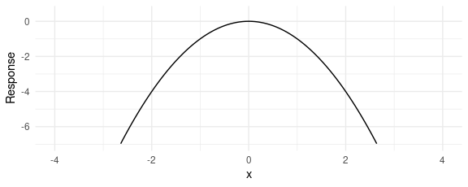
When x increases, y starts to increase. But then, as x increases further, y creeps back down in negative territory.
A marginal effect is the slope of this response function at a certain value of x. The next plot adds three tangent lines, highlighting the slopes of the response function for three values of x. The slopes of these tangents tell us three things:
- When x \< 0, the slope is positive: an increase in x is associated with an increase in y: The marginal effect is positive.
- When x = 0, the slope is null: a (small) change in x is associated with no change in y. The marginal effect is null.
- When x > 0, the slope is negative: an increase in x is associated with a decrease in y. The marginal effect is negative.
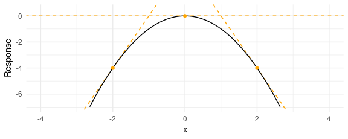
Below, we show how to reach the same conclusions in an estimation
context, with simulated data and the slopes function.
slopes function
The marginal effect is a unit-level measure of association between changes in a regressor and changes in the response. Except in the simplest linear models, the value of the marginal effect will be different from individual to individual, because it will depend on the values of the other covariates for each individual.
The slopes function thus produces distinct estimates of the marginal
effect for each row of the data used to fit the model. The output of
marginaleffects is a simple data.frame, which can be inspected with
all the usual R commands.
To show this, we load the library, download the Palmer Penguins, and estimate a GLM model:
library(marginaleffects)
dat <- read.csv("https://vincentarelbundock.github.io/Rdatasets/csv/palmerpenguins/penguins.csv")
dat$large_penguin <- ifelse(dat$body_mass_g > median(dat$body_mass_g, na.rm = TRUE), 1, 0)
mod <- glm(large_penguin ~ bill_length_mm + flipper_length_mm + species,
data = dat, family = binomial)
mfx <- slopes(mod)
head(mfx)
#>
#> Term Contrast Estimate Std. Error z Pr(>|z|) S 2.5 % 97.5 %
#> bill_length_mm dY/dX 0.0176 0.00837 2.11 0.0352 4.8 0.00122 0.0340
#> bill_length_mm dY/dX 0.0358 0.01235 2.90 0.0037 8.1 0.01164 0.0601
#> bill_length_mm dY/dX 0.0844 0.02109 4.00 <0.001 14.0 0.04310 0.1258
#> bill_length_mm dY/dX 0.0347 0.00642 5.41 <0.001 23.9 0.02213 0.0473
#> bill_length_mm dY/dX 0.0509 0.01351 3.77 <0.001 12.6 0.02440 0.0774
#> bill_length_mm dY/dX 0.0165 0.00777 2.12 0.0337 4.9 0.00128 0.0317
#>
#> Columns: rowid, term, contrast, estimate, std.error, statistic, p.value, s.value, conf.low, conf.high, predicted_lo, predicted_hi, predicted, large_penguin, bill_length_mm, flipper_length_mm, species
#> Type: response
The Marginal Effects Zoo
A dataset with one marginal effect estimate per unit of observation is a bit unwieldy and difficult to interpret. There are ways to make this information easier to digest, by computing various quantities of interest. In a characteristically excellent blog post, Professor Andrew Heiss introduces many such quantities:
- Average Marginal Effects
- Group-Average Marginal Effects
- Marginal Effects at User-Specified Values (or Representative Values)
- Marginal Effects at the Mean
- Counterfactual Marginal Effects
- Conditional Marginal Effects
The rest of this vignette defines each of those quantities and explains
how to use the slopes() and plot_slopes() functions to compute them.
The main differences between these quantities pertain to (a) the
regressor values at which we estimate marginal effects, and (b) the way
in which unit-level marginal effects are aggregated.
Heiss drew this exceedingly helpful graph which summarizes the information in the rest of this vignette:

Average Marginal Effect (AME)
A dataset with one marginal effect estimate per unit of observation is a
bit unwieldy and difficult to interpret. Many analysts like to report
the “Average Marginal Effect”, that is, the average of all the
observation-specific marginal effects. These are easy to compute based
on the full data.frame shown above, but the avg_slopes() function is
convenient:
avg_slopes(mod)
#>
#> Term Contrast Estimate Std. Error z Pr(>|z|) S 2.5 % 97.5 %
#> bill_length_mm dY/dX 0.0276 0.00578 4.774 <0.001 19.1 0.01625 0.0389
#> flipper_length_mm dY/dX 0.0106 0.00235 4.511 <0.001 17.2 0.00598 0.0152
#> species Chinstrap - Adelie -0.4148 0.05654 -7.336 <0.001 42.0 -0.52561 -0.3040
#> species Gentoo - Adelie 0.0617 0.10688 0.577 0.564 0.8 -0.14779 0.2712
#>
#> Columns: term, contrast, estimate, std.error, statistic, p.value, s.value, conf.low, conf.high
#> Type: response
Note that since marginal effects are derivatives, they are only properly
defined for continuous numeric variables. When the model also includes
categorical regressors, the summary function will try to display
relevant (regression-adjusted) contrasts between different categories,
as shown above.
You can also extract average marginal effects using tidy and glance
methods which conform to the broom package
specification:
tidy(mfx)
#> # A tibble: 4 × 8
#> term contrast estimate std.error statistic p.value conf.low conf.high
#> <chr> <chr> <dbl> <dbl> <dbl> <dbl> <dbl> <dbl>
#> 1 bill_length_mm mean(dY/dX) 0.0276 0.00578 4.77 1.81e- 6 0.0163 0.0389
#> 2 flipper_length_mm mean(dY/dX) 0.0106 0.00235 4.51 6.45e- 6 0.00598 0.0152
#> 3 species mean(Chinstrap) - mean(Adelie) -0.415 0.0565 -7.34 2.20e-13 -0.526 -0.304
#> 4 species mean(Gentoo) - mean(Adelie) 0.0617 0.107 0.577 5.64e- 1 -0.148 0.271
glance(mfx)
#> # A tibble: 1 × 7
#> aic bic r2.tjur rmse nobs F logLik
#> <dbl> <dbl> <dbl> <dbl> <int> <dbl> <logLik>
#> 1 180. 199. 0.695 0.276 342 15.7 -84.92257
Group-Average Marginal Effect (G-AME)
We can also use the by argument the average marginal effects within
different subgroups of the observed data, based on values of the
regressors. For example, to compute the average marginal effects of Bill
Length for each Species, we do:
avg_slopes(
mod,
by = "species",
variables = "bill_length_mm")
#>
#> Term Contrast species Estimate Std. Error z Pr(>|z|) S 2.5 % 97.5 %
#> bill_length_mm mean(dY/dX) Adelie 0.04353 0.00878 4.96 <0.001 20.4 0.0263 0.06074
#> bill_length_mm mean(dY/dX) Chinstrap 0.03679 0.00976 3.77 <0.001 12.6 0.0177 0.05591
#> bill_length_mm mean(dY/dX) Gentoo 0.00287 0.00284 1.01 0.312 1.7 -0.0027 0.00845
#>
#> Columns: term, contrast, species, estimate, std.error, statistic, p.value, s.value, conf.low, conf.high, predicted_lo, predicted_hi, predicted
#> Type: response
This is equivalent to manually taking the mean of the observation-level marginal effect for each species sub-group:
aggregate(
mfx$estimate,
by = list(mfx$species, mfx$term),
FUN = mean)
#> Group.1 Group.2 x
#> 1 Adelie bill_length_mm 0.043532570
#> 2 Chinstrap bill_length_mm 0.036793674
#> 3 Gentoo bill_length_mm 0.002872923
#> 4 Adelie flipper_length_mm 0.016708310
#> 5 Chinstrap flipper_length_mm 0.014121843
#> 6 Gentoo flipper_length_mm 0.001102661
#> 7 Adelie species -0.054519623
#> 8 Chinstrap species -0.313337522
#> 9 Gentoo species -0.250726004
Note that marginaleffects follows Stata and the margins package in
computing standard errors using the group-wise averaged Jacobian.
Marginal Effect at User-Specified Values
Sometimes, we are not interested in all the unit-specific marginal
effects, but would rather look at the estimated marginal effects for
certain “typical” individuals, or for user-specified values of the
regressors. The datagrid function helps us build a data grid full of
“typical” rows. For example, to generate artificial Adelies and Gentoos
with 180mm flippers:
datagrid(flipper_length_mm = 180,
species = c("Adelie", "Gentoo"),
model = mod)
#> large_penguin bill_length_mm flipper_length_mm species
#> 1 0.4853801 43.92193 180 Adelie
#> 2 0.4853801 43.92193 180 Gentoo
The same command can be used (omitting the model argument) to
marginaleffects’s newdata argument to compute marginal effects for
those (fictional) individuals:
slopes(
mod,
newdata = datagrid(
flipper_length_mm = 180,
species = c("Adelie", "Gentoo")))
#>
#> Term Contrast flipper_length_mm species Estimate Std. Error z Pr(>|z|) S 2.5 % 97.5 %
#> bill_length_mm dY/dX 180 Adelie 0.0607 0.03322 1.827 0.0678 3.9 -0.00443 0.12578
#> bill_length_mm dY/dX 180 Gentoo 0.0847 0.03925 2.157 0.0310 5.0 0.00773 0.16159
#> flipper_length_mm dY/dX 180 Adelie 0.0233 0.00551 4.230 <0.001 15.4 0.01250 0.03408
#> flipper_length_mm dY/dX 180 Gentoo 0.0325 0.00851 3.819 <0.001 12.9 0.01582 0.04917
#> species Chinstrap - Adelie 180 Adelie -0.2111 0.10668 -1.978 0.0479 4.4 -0.42013 -0.00197
#> species Chinstrap - Adelie 180 Gentoo -0.2111 0.10668 -1.978 0.0479 4.4 -0.42013 -0.00197
#> species Gentoo - Adelie 180 Adelie 0.1591 0.30225 0.526 0.5986 0.7 -0.43328 0.75152
#> species Gentoo - Adelie 180 Gentoo 0.1591 0.30225 0.526 0.5986 0.7 -0.43328 0.75152
#>
#> Columns: rowid, term, contrast, estimate, std.error, statistic, p.value, s.value, conf.low, conf.high, flipper_length_mm, species, predicted_lo, predicted_hi, predicted, large_penguin, bill_length_mm
#> Type: response
When variables are omitted from the datagrid call, they will
automatically be set at their mean or mode (depending on variable type).
Marginal Effect at the Mean (MEM)
The “Marginal Effect at the Mean” is a marginal effect calculated for a
hypothetical observation where each regressor is set at its mean or
mode. By default, the datagrid function that we used in the previous
section sets all regressors to their means or modes. To calculate the
MEM, we can set the newdata argument, which determines the values of
predictors at which we want to compute marginal effects:
slopes(mod, newdata = "mean")
#>
#> Term Contrast Estimate Std. Error z Pr(>|z|) S 2.5 % 97.5 %
#> bill_length_mm dY/dX 0.0503 0.01244 4.038 <0.001 14.2 0.02586 0.0746
#> flipper_length_mm dY/dX 0.0193 0.00553 3.489 <0.001 11.0 0.00845 0.0301
#> species Chinstrap - Adelie -0.8070 0.07690 -10.494 <0.001 83.2 -0.95776 -0.6563
#> species Gentoo - Adelie 0.0829 0.11469 0.722 0.47 1.1 -0.14193 0.3076
#>
#> Columns: rowid, term, contrast, estimate, std.error, statistic, p.value, s.value, conf.low, conf.high, predicted_lo, predicted_hi, predicted, large_penguin, bill_length_mm, flipper_length_mm, species
#> Type: response
Counterfactual Marginal Effects
The datagrid function allowed us look at completely fictional
individuals. Setting the grid_type argument of this function to
"counterfactual" lets us compute the marginal effects for the actual
observations in our dataset, but with a few manipulated values. For
example, this code will create a data.frame twice as long as the
original dat, where each observation is repeated with different values
of the flipper_length_mm variable:
We see that the rows 1, 2, and 3 of the original dataset have been
replicated twice, with different values of the flipper_length_mm
variable:
nd[nd$rowid %in% 1:3,]
#> rowidcf large_penguin bill_length_mm species flipper_length_mm
#> 1 1 0 39.1 Adelie 160
#> 2 2 0 39.5 Adelie 160
#> 3 3 0 40.3 Adelie 160
#> 343 1 0 39.1 Adelie 180
#> 344 2 0 39.5 Adelie 180
#> 345 3 0 40.3 Adelie 180
We can use the observation-level marginal effects to compute average (or median, or anything else) marginal effects over the counterfactual individuals:
library(dplyr)
slopes(mod, newdata = nd) |>
group_by(term) |>
summarize(estimate = median(estimate))
#> # A tibble: 3 × 2
#> term estimate
#> <chr> <dbl>
#> 1 bill_length_mm 0.00985
#> 2 flipper_length_mm 0.00378
#> 3 species 0.0000226
Conditional Marginal Effects (Plot)
The plot_slopes function can be used to draw “Conditional Marginal
Effects.” This is useful when a model includes interaction terms and we
want to plot how the marginal effect of a variable changes as the value
of a “condition” (or “moderator”) variable changes:
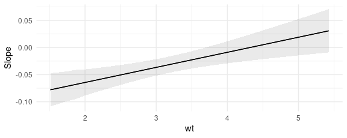
The marginal effects in the plot above were computed with values of all
regressors – except the variables and the condition – held at their
means or modes, depending on variable type.
Since plot_slopes() produces a ggplot2 object, it is easy to
customize. For example:
plot_slopes(mod, variables = "hp", condition = "wt") +
geom_rug(aes(x = wt), data = mtcars) +
theme_classic()
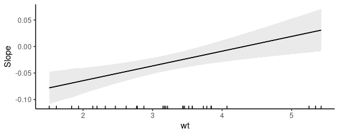
Example: Quadratic
In the “Definition” section of this vignette, we considered how marginal
effects can be computed analytically in a simple quadratic equation
context. We can now use the slopes function to replicate our analysis
of the quadratic function in a regression application.
Say you estimate a linear regression model with a quadratic term:
Y = β0 + β1X2 + ε
and obtain estimates of β0 = 1 and β1 = 2. Taking the partial derivative with respect to X and plugging in our estimates gives us the marginal effect of X on Y:
∂Y/∂X = β0 + 2 ⋅ β1X ∂Y/∂X = 1 + 4X
This result suggests that the effect of a change in X on Y depends on the level of X. When X is large and positive, an increase in X is associated to a large increase in Y. When X is small and positive, an increase in X is associated to a small increase in Y. When X is a large negative value, an increase in X is associated with a decrease in Y.
marginaleffects arrives at the same conclusion in simulated data:
library(tidyverse)
N <- 1e5
quad <- data.frame(x = rnorm(N))
quad$y <- 1 + 1 * quad$x + 2 * quad$x^2 + rnorm(N)
mod <- lm(y ~ x + I(x^2), quad)
slopes(mod, newdata = datagrid(x = -2:2)) |>
mutate(truth = 1 + 4 * x) |>
select(estimate, truth)
#>
#> Estimate
#> -6.997
#> -2.999
#> 0.998
#> 4.995
#> 8.993
#>
#> Columns: estimate, truth
We can plot conditional adjusted predictions with plot_predictions
function:
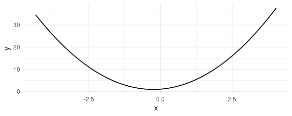
We can plot conditional marginal effects with the plot_slopes function
(see section below):
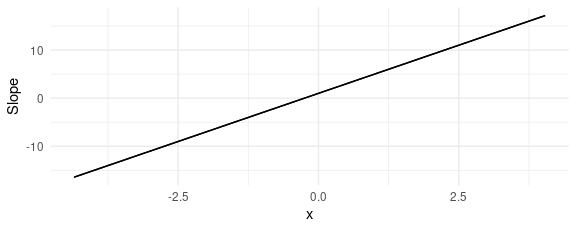
Again, the conclusion is the same. When x \< 0, an increase in x is associated with an decrease in y. When x > 1/4, the marginal effect is positive, which suggests that an increase in x is associated with an increase in y.
Slopes vs Predictions: A Visual Interpretation
Often, analysts will plot predicted values of the outcome with a best fit line:
library(ggplot2)
mod <- lm(mpg ~ hp * qsec, data = mtcars)
plot_predictions(mod, condition = "hp", vcov = TRUE) +
geom_point(data = mtcars, aes(hp, mpg))
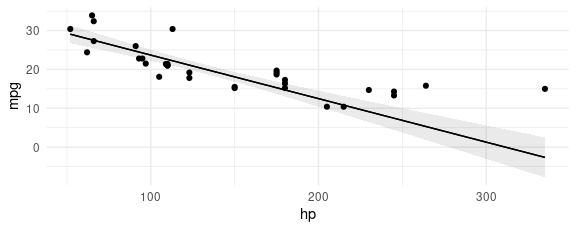
The slope of this line is calculated using the same technique we all learned in grade school: dividing rise over run.
p <- plot_predictions(mod, condition = "hp", vcov = TRUE, draw = FALSE)
plot_predictions(mod, condition = "hp", vcov = TRUE) +
geom_segment(aes(x = p$hp[10], xend = p$hp[10], y = p$estimate[10], yend = p$estimate[20])) +
geom_segment(aes(x = p$hp[10], xend = p$hp[20], y = p$estimate[20], yend = p$estimate[20])) +
annotate("text", label = "Rise", y = 10, x = 140) +
annotate("text", label = "Run", y = 2, x = 200)
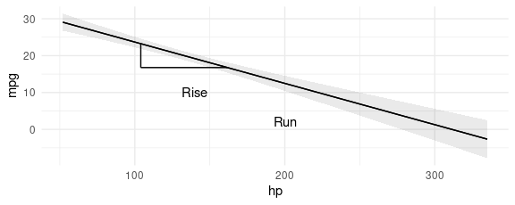
Instead of computing this slope manually, we can just call:
avg_slopes(mod, variables = "hp")
#>
#> Term Estimate Std. Error z Pr(>|z|) S 2.5 % 97.5 %
#> hp -0.112 0.0126 -8.92 <0.001 61.0 -0.137 -0.0874
#>
#> Columns: term, estimate, std.error, statistic, p.value, s.value, conf.low, conf.high
#> Type: response
Now, consider the fact that our model includes an interaction between
hp and qsec. This means that the slope will actually differ based on
the value of the moderator variable qsec:
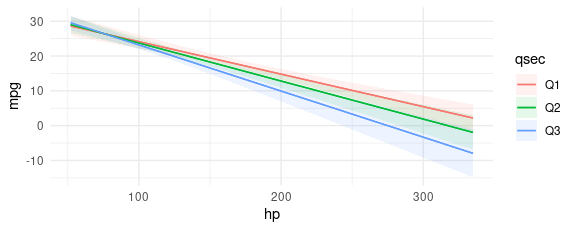
We can estimate the slopes of these three fit lines easily:
slopes(
mod,
variables = "hp",
newdata = datagrid(qsec = quantile(mtcars$qsec, probs = c(.25, .5, .75))))
#>
#> Term qsec Estimate Std. Error z Pr(>|z|) S 2.5 % 97.5 %
#> hp 16.9 -0.0934 0.0111 -8.43 <0.001 54.6 -0.115 -0.0717
#> hp 17.7 -0.1093 0.0123 -8.92 <0.001 60.9 -0.133 -0.0853
#> hp 18.9 -0.1325 0.0154 -8.61 <0.001 56.9 -0.163 -0.1023
#>
#> Columns: rowid, term, estimate, std.error, statistic, p.value, s.value, conf.low, conf.high, qsec, predicted_lo, predicted_hi, predicted, mpg, hp
#> Type: response
As we see in the graph, all three slopes are negative, but the Q3 slope is steepest.
We could then push this one step further, and measure the slope of mpg
with respect to hp, for all observed values of qsec. This is
achieved with the plot_slopes() function:
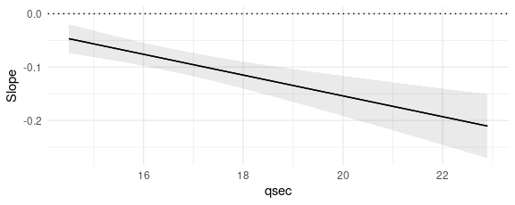
This plot shows that the marginal effect of hp on mpg is always
negative (the slope is always below zero), and that this effect becomes
even more negative as qsec increases.
Prediction types
The marginaleffect function takes the derivative of the fitted (or
predicted) values of the model, as is typically generated by the
predict(model) function. By default, predict produces predictions on
the "response" scale, so the marginal effects should be interpreted on
that scale. However, users can pass a string or a vector of strings to
the type argument, and marginaleffects will consider different
outcomes.
Typical values include "response" and "link", but users should refer
to the documentation of the predict of the package they used to fit
the model to know what values are allowable. documentation.
mod <- glm(am ~ mpg, family = binomial, data = mtcars)
avg_slopes(mod, type = "response")
#>
#> Term Estimate Std. Error z Pr(>|z|) S 2.5 % 97.5 %
#> mpg 0.0465 0.00887 5.24 <0.001 22.6 0.0291 0.0639
#>
#> Columns: term, estimate, std.error, statistic, p.value, s.value, conf.low, conf.high
#> Type: response
avg_slopes(mod, type = "link")
#>
#> Term Estimate Std. Error z Pr(>|z|) S 2.5 % 97.5 %
#> mpg 0.307 0.115 2.67 0.00751 7.1 0.0819 0.532
#>
#> Columns: term, estimate, std.error, statistic, p.value, s.value, conf.low, conf.high
#> Type: link
Minimum or maximum slope (velocity)
In some fields such as epidemiology, it is common to compute the minimum
or maximum slope, as a measure of the “velocity” of the response
function. To achieve this, we can use the comparisons() function and
define custom functions. Here, we present a quick example without much
detail, but you can refer to the comparisons
vignette for more explanations on custom functions in
the comparison argument.
Consider this simple GAM model:
library(marginaleffects)
library(itsadug)
library(mgcv)
simdat$Subject <- as.factor(simdat$Subject)
model <- bam(Y ~ Group + s(Time, by = Group) + s(Subject, bs = "re"),
data = simdat)
plot_slopes(model, variables = "Time", condition = c("Time", "Group"))
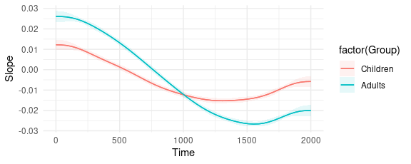
Minimum velocity, overall:
comparisons(model,
variables = list("Time" = 1e-6),
vcov = FALSE,
comparison = \(hi, lo) min((hi - lo) / 1e-6))
#>
#> Term Contrast Estimate
#> Time +1e-06 -0.0267
#>
#> Columns: term, contrast, estimate, predicted_lo, predicted_hi, predicted
#> Type: response
Minimum velocity by group:
comparisons(model,
variables = list("Time" = 1e-6),
by = "Group",
vcov = FALSE,
comparison = \(hi, lo) min((hi - lo) / 1e-6))
#>
#> Term Contrast Group Estimate
#> Time +1e-06 Children -0.0153
#> Time +1e-06 Adults -0.0267
#>
#> Columns: term, contrast, Group, estimate
#> Type: response
Difference between the minimum velocity of each group:
comparisons(model,
variables = list("Time" = 1e-6),
vcov = FALSE,
by = "Group",
hypothesis = "pairwise",
comparison = \(hi, lo) min((hi - lo) / 1e-6))
#>
#> Term Estimate
#> Children - Adults 0.0114
#>
#> Columns: term, estimate
#> Type: response
What Time value corresponds to the minimum velocity?
low = function(hi, lo, x) {
dydx <- (hi - lo) / 1e-6
dydx_min <- min(dydx)
x[dydx == dydx_min][1]
}
comparisons(model,
variables = list("Time" = 1e-6),
vcov = FALSE,
by = "Group",
comparison = low)
#>
#> Term Contrast Group Estimate
#> Time +1e-06 Children 1313
#> Time +1e-06 Adults 1556
#>
#> Columns: term, contrast, Group, estimate
#> Type: response
Manual computation
Now we illustrate how to reproduce the output of slopes manually:
library(marginaleffects)
mod <- glm(am ~ hp, family = binomial, data = mtcars)
eps <- 1e-4
d1 <- transform(mtcars, hp = hp - eps / 2)
d2 <- transform(mtcars, hp = hp + eps / 2)
p1 <- predict(mod, type = "response", newdata = d1)
p2 <- predict(mod, type = "response", newdata = d2)
s <- (p2 - p1) / eps
tail(s)
#> Porsche 914-2 Lotus Europa Ford Pantera L Ferrari Dino Maserati Bora Volvo 142E
#> -0.0020285496 -0.0020192814 -0.0013143243 -0.0018326764 -0.0008900012 -0.0020233577
Which is equivalent to:
slopes(mod, eps = eps) |> tail()
#>
#> Term Estimate Std. Error z Pr(>|z|) S 2.5 % 97.5 %
#> hp -0.00203 0.001347 -1.51 0.13199 2.9 -0.00467 0.000611
#> hp -0.00202 0.001556 -1.30 0.19440 2.4 -0.00507 0.001031
#> hp -0.00131 0.000441 -2.98 0.00285 8.5 -0.00218 -0.000451
#> hp -0.00183 0.001323 -1.39 0.16591 2.6 -0.00443 0.000760
#> hp -0.00089 0.000283 -3.14 0.00169 9.2 -0.00145 -0.000334
#> hp -0.00202 0.001586 -1.28 0.20206 2.3 -0.00513 0.001085
#>
#> Columns: rowid, term, estimate, std.error, statistic, p.value, s.value, conf.low, conf.high, predicted_lo, predicted_hi, predicted, am, hp
#> Type: response
And we can get average marginal effects by subgroup as follows:
tapply(s, mtcars$cyl, mean)
#> 4 6 8
#> -0.002010526 -0.001990774 -0.001632681
slopes(mod, eps = eps, by = "cyl")
#>
#> Term Contrast cyl Estimate Std. Error z Pr(>|z|) S 2.5 % 97.5 %
#> hp mean(dY/dX) 4 -0.00201 0.00141 -1.43 0.1540 2.7 -0.00478 0.000754
#> hp mean(dY/dX) 6 -0.00199 0.00150 -1.33 0.1833 2.4 -0.00492 0.000941
#> hp mean(dY/dX) 8 -0.00163 0.00095 -1.72 0.0858 3.5 -0.00350 0.000230
#>
#> Columns: term, contrast, cyl, estimate, std.error, statistic, p.value, s.value, conf.low, conf.high, predicted_lo, predicted_hi, predicted
#> Type: response
[1] The term “effect” is itself tricky. To be clear, this vignette does not use the word “effect” to imply “causality”.